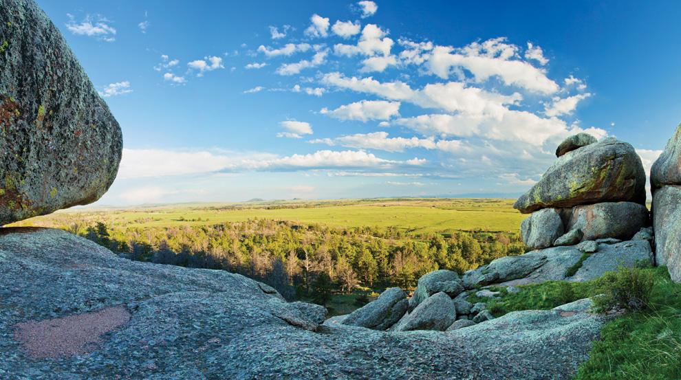
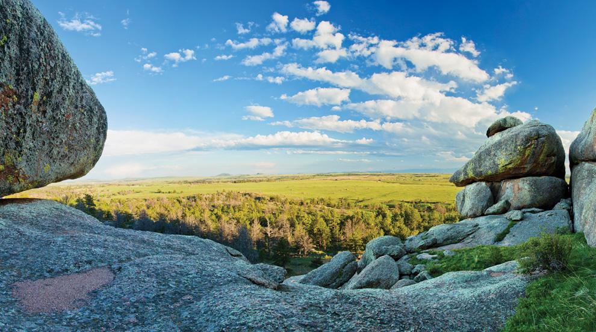

As far as the fun stuff, I am a big fan of video games, movies, and music. I like fitness, good weather, walks and jogs with my dog, and being around friends and family. I built a gaming computer recently (after a long hunt for a 3070 graphics card) and have always been a fan of story driven games. I've played drums to rock, metal, and blues for nearly 20 years - and even used to play in a band and travel to play concerts in small towns. I also am (slowly) learning guitar and piano. I love the outdoors, and have always been a big fan of hiking and water sports - in fact, there's been a constant struggle about whether to live near mountains or near the ocean. I've lost my interest in motorcycles after a painful accident in 2015, but every so often a Harley passing by peaks my interest. I also enjoy reading, woodworking, gardening, and the occasional road trip.
Below are some websites that I really enjoy browsing on a daily basis.
I am a big fan of Reddit and find myself spending a lot of time reading here. I find that I can easily reach all of my interests, and find humorous or interesting content and news as well.
I also find a lot of very important guides and time wasters when browsing Youtube. The amount of knowledge and resources there are simply amazing.
Finally, I like to read through some highlights on Gizmodo. The links at the top let me quickly browse through multiple news in hobby areas such as tech, cars, video games, and media.

 
